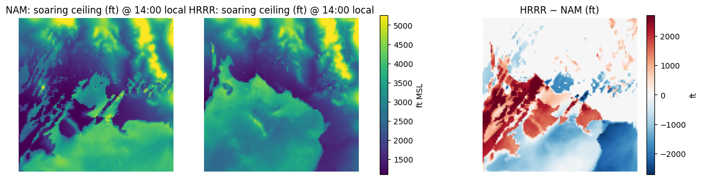
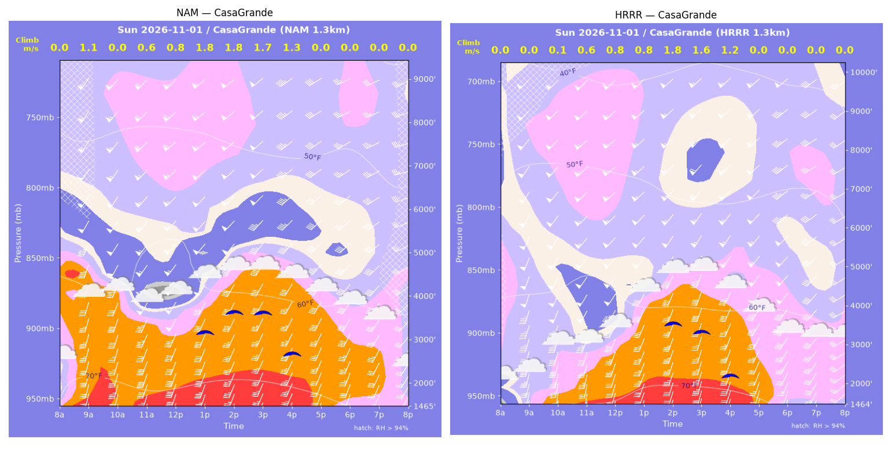
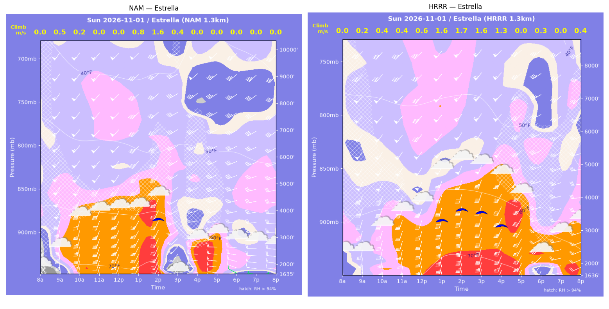
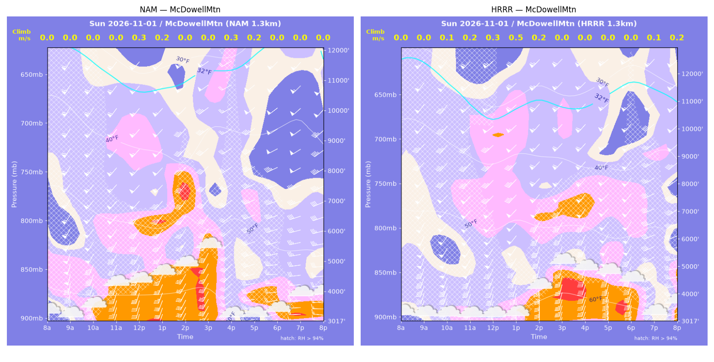
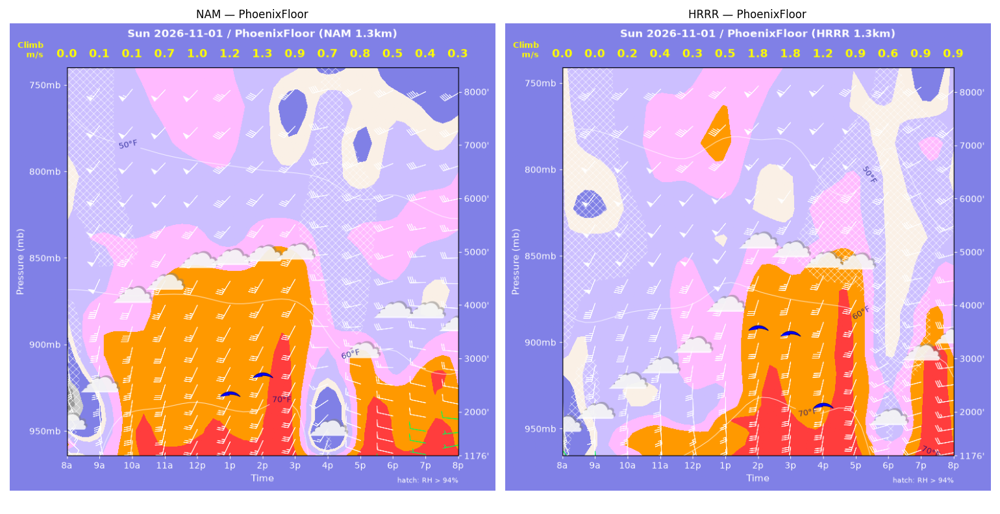
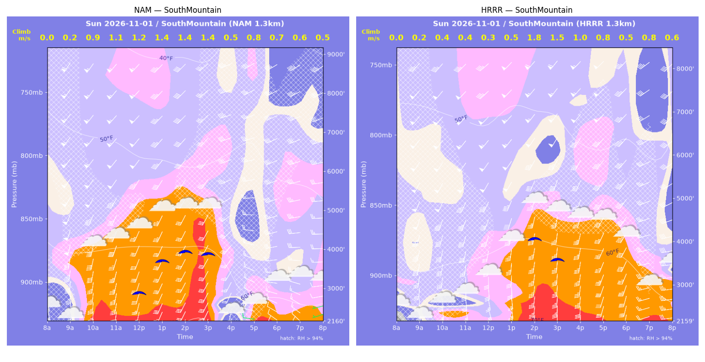
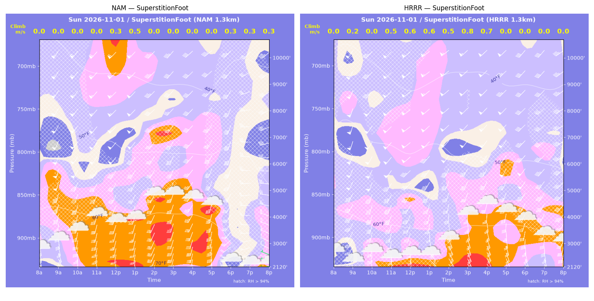
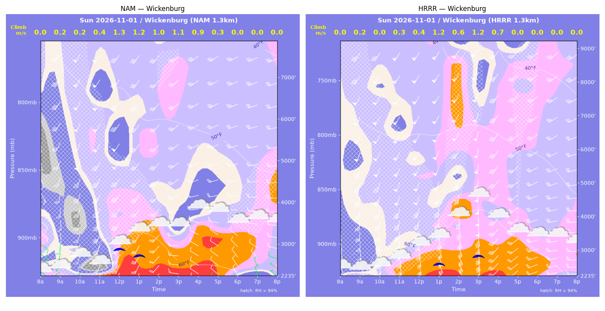

../runs/ab-phoenix-nam — model nam, cycle 2026-10-31 18z, dx 1.3333333740234374 km, 13 hours, grid 114×114../runs/ab-phoenix-hrrr — model hrrr, cycle 2026-10-31 18z, dx 1.3333333740234374 km, 13 hours, grid 114×114Grids identical; afternoon = 12:00–17:59 local (UTC-7). Δ = HRRR − NAM.
| Site | terrain ft | BL top (AGL) med|Δ| / bias (ft) | w* med|Δ| / bias (fpm) | Soaring ceiling med|Δ| / bias (ft) | BL wind speed med|Δ| / bias (kt) | BL wind dir med|Δ| / bias (deg) | 2 m temperature med|Δ| / bias (F) | Sfc LCL (AGL) med|Δ| / bias (ft) | Sensible heat flux med|Δ| / bias (W/m2) |
|---|---|---|---|---|---|---|---|---|---|
| PhoenixFloor | 1176 | 2285 / -313 | 119 / +22 | 867 / +456 | 15 / +1 | 23 / -27 | 4 / +2 | 1249 / +368 | 31 / +29 |
| SouthMountain | 2160 | 1782 / -715 | 74 / -32 | 211 / -477 | 15 / +3 | 28 / -33 | 3 / +1 | 1175 / +145 | 42 / -1 |
| SuperstitionFoot | 2121 | 1149 / -1367 | 82 / +82 | 0 / -0 | 8 / -3 | 40 / -28 | 2 / -2 | 1007 / -931 | 25 / +30 |
| Estrella | 1635 | 1847 / -171 | 137 / +129 | 817 / +810 | 13 / +12 | 19 / -20 | 4 / +5 | 775 / +1111 | 60 / +62 |
| Wickenburg | 2235 | 671 / +202 | 46 / -58 | 112 / -80 | 16 / +12 | 53 / -50 | 3 / +3 | 211 / +157 | 24 / -35 |
| CasaGrande | 1465 | 482 / -197 | 15 / -42 | 256 / -469 | 4 / -0 | 7 / -8 | 1 / -1 | 181 / -124 | 3 / -33 |
| McDowellMtn | 3018 | 3278 / +1037 | 44 / +1 | 0 / -0 | 17 / +12 | 18 / -19 | 3 / -0 | 1302 / -113 | 23 / -5 |
| Metric | n | median |Δ| | p90 |Δ| | bias |
|---|---|---|---|---|
| BL top (AGL) (ft) | 42 | 1079 | 3980 | -218 |
| w* (fpm) | 42 | 60 | 178 | +15 |
| Soaring ceiling (ft) | 42 | 1 | 1631 | +34 |
| BL wind speed (kt) | 42 | 12 | 26 | +5 |
| BL wind dir (deg) | 42 | 22 | 56 | -27 |
| 2 m temperature (F) | 42 | 2 | 6 | +1 |
| Sfc LCL (AGL) (ft) | 42 | 690 | 1692 | +88 |
| Sensible heat flux (W/m2) | 42 | 26 | 110 | +7 |
diffmap_tol.png| local | BL top NAM/HRRR ft | w* NAM/HRRR fpm | ceiling NAM/HRRR ft | BL wind NAM/HRRR | T2 NAM/HRRR F | HFX NAM/HRRR |
|---|---|---|---|---|---|---|
| 08:00 | 0 / 0 | 0 / 0 | 1176 / 1176 | 8kt@129 / 5kt@116 | 64 / 64 | 0 / 0 |
| 09:00 | 92 / 3507 | 20 / 0 | 1176 / 1176 | 19kt@164 / 48kt@206 | 71 / 67 | 1 / -1 |
| 10:00 | 511 / 252 | 28 / 43 | 1176 / 1176 | 29kt@188 / 16kt@181 | 75 / 69 | 1 / 5 |
| 11:00 | 1760 / 679 | 139 / 79 | 1176 / 1176 | 32kt@199 / 22kt@176 | 76 / 70 | 24 / 11 |
| 12:00 | 3949 / 459 | 198 / 65 | 1176 / 1176 | 42kt@212 / 20kt@166 | 76 / 71 | 31 / 9 |
| 13:00 | 3797 / 769 | 243 / 96 | 2433 / 1176 | 38kt@215 / 25kt@176 | 76 / 74 | 59 / 18 |
| 14:00 | 3962 / 4022 | 257 / 350 | 2753 / 3551 | 39kt@213 / 37kt@206 | 76 / 78 | 67 / 168 |
| 15:00 | 3853 / 3863 | 168 / 346 | 1176 / 3436 | 35kt@211 / 37kt@205 | 76 / 77 | 19 / 168 |
| 16:00 | 455 / 3240 | 130 / 236 | 1176 / 2113 | 13kt@207 / 35kt@204 | 66 / 76 | 74 / 63 |
| 17:00 | 2136 / 3921 | 152 / 186 | 1176 / 1176 | 24kt@275 / 41kt@213 | 70 / 75 | 25 / 25 |
| 18:00 | 1591 / 524 | 91 / 126 | 1176 / 1176 | 23kt@272 / 24kt@250 | 70 / 67 | 7 / 58 |
| 19:00 | 1954 / 2618 | 82 / 180 | 1176 / 1176 | 22kt@281 / 29kt@258 | 69 / 71 | 4 / 34 |
| 20:00 | 1127 / 2115 | 67 / 182 | 1176 / 1176 | 12kt@280 / 31kt@264 | 68 / 68 | 4 / 43 |
| local | BL top NAM/HRRR ft | w* NAM/HRRR fpm | ceiling NAM/HRRR ft | BL wind NAM/HRRR | T2 NAM/HRRR F | HFX NAM/HRRR |
|---|---|---|---|---|---|---|
| 08:00 | 0 / 0 | 0 / 0 | 2160 / 2160 | 23kt@162 / 18kt@175 | 65 / 63 | 0 / 0 |
| 09:00 | 99 / 99 | 34 / 35 | 2160 / 2160 | 24kt@164 / 22kt@172 | 66 / 64 | 6 / 7 |
| 10:00 | 2082 / 297 | 172 / 76 | 2160 / 2160 | 40kt@194 / 27kt@177 | 70 / 65 | 38 / 22 |
| 11:00 | 2317 / 323 | 215 / 78 | 2160 / 2160 | 39kt@201 / 27kt@172 | 71 / 65 | 66 / 22 |
| 12:00 | 3383 / 253 | 231 / 62 | 2997 / 2160 | 40kt@209 / 22kt@162 | 71 / 67 | 57 / 14 |
| 13:00 | 3639 / 628 | 274 / 101 | 3807 / 2160 | 41kt@213 / 27kt@175 | 71 / 69 | 88 / 25 |
| 14:00 | 3961 / 3233 | 282 / 346 | 4031 / 4052 | 36kt@213 / 42kt@204 | 72 / 72 | 88 / 199 |
| 15:00 | 3865 / 2883 | 280 / 289 | 3970 / 3569 | 34kt@213 / 37kt@194 | 71 / 71 | 88 / 129 |
| 16:00 | 265 / 2468 | 108 / 191 | 2160 / 2160 | 19kt@195 / 35kt@196 | 64 / 70 | 72 / 43 |
| 17:00 | 1213 / 2573 | 154 / 149 | 2160 / 2160 | 18kt@295 / 41kt@211 | 64 / 69 | 46 / 19 |
| 18:00 | 909 / 638 | 138 / 93 | 2160 / 2160 | 16kt@284 / 33kt@197 | 64 / 67 | 44 / 19 |
| 19:00 | 742 / 1500 | 110 / 149 | 2160 / 2160 | 18kt@288 / 32kt@256 | 63 / 65 | 27 / 34 |
| 20:00 | 758 / 1122 | 105 / 122 | 2160 / 2160 | 12kt@262 / 37kt@262 | 63 / 63 | 23 / 24 |
| local | BL top NAM/HRRR ft | w* NAM/HRRR fpm | ceiling NAM/HRRR ft | BL wind NAM/HRRR | T2 NAM/HRRR F | HFX NAM/HRRR |
|---|---|---|---|---|---|---|
| 08:00 | 0 / 0 | 0 / 0 | 2121 / 2120 | 17kt@164 / 13kt@151 | 67 / 66 | 0 / 0 |
| 09:00 | 4637 / 201 | 0 / 37 | 2121 / 2120 | 50kt@203 / 15kt@207 | 68 / 66 | -12 / 3 |
| 10:00 | 4976 / 4589 | 0 / 0 | 2121 / 2120 | 52kt@215 / 52kt@212 | 70 / 67 | -13 / -4 |
| 11:00 | 5181 / 700 | 0 / 90 | 2121 / 2120 | 53kt@218 / 29kt@184 | 70 / 67 | -4 / 15 |
| 12:00 | 1038 / 976 | 54 / 118 | 2121 / 2120 | 25kt@194 / 26kt@191 | 69 / 67 | 1 / 24 |
| 13:00 | 1296 / 863 | 92 / 124 | 2121 / 2120 | 22kt@195 / 18kt@156 | 69 / 67 | 7 / 31 |
| 14:00 | 2170 / 890 | 0 / 100 | 2121 / 2120 | 31kt@205 / 27kt@153 | 71 / 67 | -12 / 14 |
| 15:00 | 5739 / 1704 | 0 / 151 | 2121 / 2120 | 38kt@218 / 26kt@176 | 70 / 69 | -21 / 25 |
| 16:00 | 5165 / 1752 | 0 / 147 | 2121 / 2120 | 37kt@222 / 24kt@175 | 70 / 69 | -21 / 22 |
| 17:00 | 4364 / 5382 | 0 / 0 | 2121 / 2120 | 38kt@209 / 50kt@220 | 68 / 67 | -32 / -14 |
| 18:00 | 209 / 4614 | 55 / 0 | 2121 / 2120 | 15kt@265 / 43kt@222 | 63 / 67 | 11 / -12 |
| 19:00 | 249 / 4269 | 50 / 0 | 2121 / 2120 | 14kt@223 / 43kt@225 | 62 / 65 | 6 / -18 |
| 20:00 | 446 / 4296 | 57 / 0 | 2121 / 2120 | 6kt@285 / 45kt@234 | 62 / 65 | 5 / -7 |
| local | BL top NAM/HRRR ft | w* NAM/HRRR fpm | ceiling NAM/HRRR ft | BL wind NAM/HRRR | T2 NAM/HRRR F | HFX NAM/HRRR |
|---|---|---|---|---|---|---|
| 08:00 | 0 / 0 | 0 / 0 | 1635 / 1636 | 14kt@140 / 16kt@177 | 63 / 65 | 0 / 0 |
| 09:00 | 244 / 105 | 96 / 32 | 1635 / 1636 | 27kt@176 / 21kt@174 | 69 / 67 | 52 / 4 |
| 10:00 | 262 / 386 | 44 / 76 | 1635 / 1636 | 27kt@193 / 23kt@188 | 73 / 68 | 1 / 16 |
| 11:00 | 6087 / 457 | 0 / 83 | 1635 / 1636 | 52kt@220 / 21kt@188 | 72 / 70 | -12 / 18 |
| 12:00 | 6140 / 1473 | 0 / 113 | 1635 / 1636 | 50kt@224 / 37kt@199 | 72 / 71 | -4 / 13 |
| 13:00 | 3286 / 3057 | 157 / 318 | 1635 / 3300 | 40kt@211 / 52kt@208 | 72 / 75 | 14 / 158 |
| 14:00 | 4010 / 3458 | 307 / 331 | 3743 / 3588 | 40kt@217 / 51kt@204 | 74 / 76 | 104 / 158 |
| 15:00 | 249 / 3580 | 83 / 305 | 1635 / 3506 | 23kt@203 / 56kt@208 | 63 / 75 | 32 / 119 |
| 16:00 | 1535 / 3927 | 0 / 252 | 1635 / 3115 | 24kt@266 / 49kt@213 | 67 / 74 | -6 / 60 |
| 17:00 | 3857 / 2554 | 0 / 0 | 1635 / 1636 | 42kt@245 / 44kt@214 | 67 / 71 | -5 / -3 |
| 18:00 | 2937 / 212 | 0 / 61 | 1635 / 1636 | 37kt@254 / 22kt@208 | 64 / 67 | -1 / 15 |
| 19:00 | 2412 / 3486 | 0 / 0 | 1635 / 1636 | 32kt@261 / 38kt@237 | 63 / 65 | -1 / -14 |
| 20:00 | 2405 / 1842 | 0 / 71 | 1635 / 1636 | 30kt@265 / 30kt@261 | 62 / 65 | -0 / 1 |
| local | BL top NAM/HRRR ft | w* NAM/HRRR fpm | ceiling NAM/HRRR ft | BL wind NAM/HRRR | T2 NAM/HRRR F | HFX NAM/HRRR |
|---|---|---|---|---|---|---|
| 08:00 | 0 / 0 | 0 / 0 | 2235 / 2236 | 7kt@126 / 10kt@151 | 56 / 59 | 0 / 0 |
| 09:00 | 270 / 219 | 44 / 45 | 2235 / 2236 | 4kt@209 / 14kt@146 | 58 / 60 | 4 / 6 |
| 10:00 | 224 / 3343 | 34 / 0 | 2235 / 2236 | 7kt@198 / 48kt@201 | 60 / 62 | 2 / -2 |
| 11:00 | 333 / 452 | 71 / 64 | 2235 / 2236 | 25kt@201 / 27kt@168 | 61 / 64 | 15 / 8 |
| 12:00 | 1803 / 662 | 265 / 74 | 2998 / 2236 | 42kt@207 / 29kt@167 | 67 / 65 | 146 / 8 |
| 13:00 | 2063 / 1568 | 234 / 229 | 2807 / 2584 | 38kt@210 / 43kt@181 | 67 / 67 | 87 / 113 |
| 14:00 | 1729 / 1157 | 199 / 120 | 2235 / 2236 | 31kt@220 / 37kt@164 | 66 / 69 | 63 / 20 |
| 15:00 | 1300 / 2070 | 211 / 231 | 2235 / 2738 | 23kt@248 / 52kt@179 | 64 / 70 | 102 / 85 |
| 16:00 | 1574 / 1439 | 177 / 141 | 2235 / 2236 | 18kt@268 / 37kt@219 | 63 / 69 | 48 / 25 |
| 17:00 | 1255 / 4042 | 56 / 0 | 2235 / 2236 | 13kt@281 / 39kt@223 | 62 / 66 | 0 / -9 |
| 18:00 | 1262 / 3102 | 0 / 0 | 2235 / 2236 | 11kt@286 / 32kt@240 | 60 / 64 | -6 / -7 |
| 19:00 | 641 / 2779 | 0 / 0 | 2235 / 2236 | 9kt@318 / 30kt@252 | 59 / 61 | -5 / -20 |
| 20:00 | 754 / 2847 | 0 / 0 | 2235 / 2236 | 11kt@284 / 29kt@260 | 58 / 59 | -2 / -17 |
| local | BL top NAM/HRRR ft | w* NAM/HRRR fpm | ceiling NAM/HRRR ft | BL wind NAM/HRRR | T2 NAM/HRRR F | HFX NAM/HRRR |
|---|---|---|---|---|---|---|
| 08:00 | 0 / 0 | 0 / 0 | 1465 / 1465 | 12kt@170 / 9kt@181 | 71 / 67 | 0 / 0 |
| 09:00 | 3415 / 4177 | 219 / 0 | 1465 / 1465 | 45kt@199 / 52kt@204 | 75 / 69 | 44 / -11 |
| 10:00 | 2695 / 240 | 0 / 29 | 1465 / 1465 | 45kt@203 / 28kt@187 | 74 / 71 | -11 / 0 |
| 11:00 | 2108 / 1215 | 120 / 123 | 1465 / 1465 | 46kt@204 / 37kt@195 | 73 / 71 | 10 / 22 |
| 12:00 | 2113 / 1646 | 166 / 150 | 1465 / 1465 | 48kt@208 / 38kt@203 | 73 / 72 | 30 / 29 |
| 13:00 | 3008 / 2656 | 350 / 151 | 3239 / 1465 | 48kt@213 / 42kt@208 | 76 / 73 | 216 / 17 |
| 14:00 | 3716 / 3526 | 359 / 350 | 3694 / 3542 | 48kt@218 / 48kt@209 | 76 / 75 | 188 / 184 |
| 15:00 | 3910 / 3414 | 329 / 314 | 3661 / 3302 | 45kt@217 / 47kt@203 | 75 / 75 | 137 / 137 |
| 16:00 | 3512 / 2828 | 248 / 232 | 2728 / 2201 | 44kt@220 / 45kt@205 | 74 / 74 | 64 / 66 |
| 17:00 | 4448 / 5457 | 0 / 0 | 1465 / 1465 | 41kt@227 / 51kt@225 | 72 / 71 | -10 / -7 |
| 18:00 | 3799 / 4493 | 0 / 0 | 1465 / 1465 | 39kt@226 / 48kt@225 | 70 / 69 | -27 / -22 |
| 19:00 | 3919 / 3747 | 0 / 0 | 1465 / 1465 | 41kt@231 / 42kt@227 | 69 / 68 | -20 / -27 |
| 20:00 | 2271 / 3140 | 0 / 0 | 1465 / 1465 | 29kt@228 / 31kt@238 | 67 / 67 | -10 / -22 |
| local | BL top NAM/HRRR ft | w* NAM/HRRR fpm | ceiling NAM/HRRR ft | BL wind NAM/HRRR | T2 NAM/HRRR F | HFX NAM/HRRR |
|---|---|---|---|---|---|---|
| 08:00 | 0 / 0 | 0 / 0 | 3018 / 3017 | 27kt@163 / 19kt@182 | 63 / 61 | 0 / 0 |
| 09:00 | 4118 / 3442 | 0 / 0 | 3018 / 3017 | 56kt@213 / 49kt@205 | 63 / 62 | -8 / -1 |
| 10:00 | 4863 / 115 | 0 / 29 | 3018 / 3017 | 54kt@218 / 31kt@202 | 64 / 62 | -14 / 2 |
| 11:00 | 5439 / 261 | 0 / 47 | 3018 / 3017 | 54kt@220 / 30kt@193 | 65 / 62 | -9 / 5 |
| 12:00 | 1020 / 281 | 60 / 62 | 3018 / 3017 | 33kt@198 / 31kt@187 | 65 / 62 | -1 / 12 |
| 13:00 | 1627 / 707 | 42 / 108 | 3018 / 3017 | 33kt@204 / 32kt@185 | 65 / 63 | -3 / 25 |
| 14:00 | 6018 / 909 | 0 / 40 | 3018 / 3017 | 45kt@222 / 32kt@183 | 66 / 65 | -19 / -2 |
| 15:00 | 4911 / 6357 | 0 / 0 | 3018 / 3017 | 40kt@224 / 59kt@222 | 66 / 66 | -33 / -28 |
| 16:00 | 267 / 6357 | 53 / 0 | 3018 / 3017 | 23kt@237 / 59kt@219 | 61 / 65 | 7 / -29 |
| 17:00 | 186 / 5636 | 49 / 0 | 3018 / 3017 | 21kt@255 / 52kt@227 | 60 / 64 | 8 / -46 |
| 18:00 | 3912 / 4976 | 0 / 0 | 3018 / 3017 | 44kt@249 / 49kt@216 | 60 / 63 | -12 / -23 |
| 19:00 | 3502 / 100 | 0 / 28 | 3018 / 3017 | 41kt@252 / 26kt@219 | 59 / 61 | -14 / 3 |
| 20:00 | 3021 / 885 | 0 / 41 | 3018 / 3017 | 36kt@256 / 31kt@255 | 58 / 60 | -11 / -1 |
montage_PhoenixFloor.pngmontage_SouthMountain.pngmontage_SuperstitionFoot.pngmontage_Estrella.pngmontage_Wickenburg.pngmontage_CasaGrande.pngmontage_McDowellMtn.png